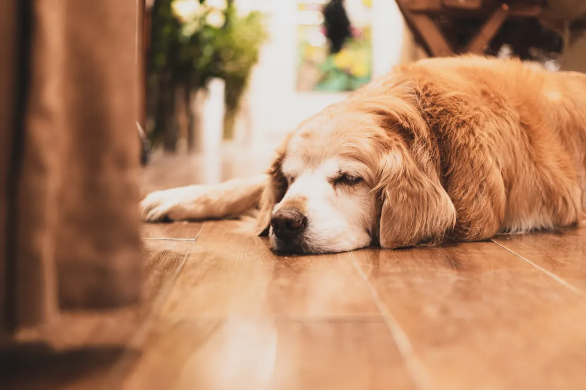

Abschied zu Hause
Wenn es Zeit ist, komme ich zu Ihnen. Ihr Tier schläft dort ein, wo es sein Leben verbracht hat, auf seinem Platz und bei den Menschen, die es kennt.

Wann es Zeit ist
Diese Frage stellen sich fast alle, die ein altes oder schwer krankes Tier haben. Einen Tag, der sich richtig anfühlt, gibt es selten.
Achten Sie darauf, ob Ihr Tier noch frisst und ob es sich über die Dinge freut, die es immer mochte. Schmerzen, die sich nicht mehr lindern lassen, sind ein deutliches Zeichen. Sind Sie unsicher, komme ich vorher zu einem Gespräch und untersuche Ihr Tier. Sie entscheiden danach in Ruhe.
Wie es abläuft
Wir vereinbaren einen Termin, an dem niemand auf die Uhr sieht. Zuerst bekommt Ihr Tier eine Spritze, die es tief schlafen lässt. Sie können es dabei halten und mit ihm sprechen.
Erst wenn es nichts mehr spürt, gebe ich das Medikament, mit dem sein Herz aufhört zu schlagen. Danach haben Sie so viel Zeit, wie Sie brauchen.
Kinder und andere Tiere aus Ihrem Haushalt dürfen dabei sein.
Was danach geschieht
Viele Halter lassen ihr Tier in einem Tierkrematorium einäschern. Ich nenne Ihnen eines in der Nähe und kläre mit Ihnen, wer Ihr Tier abholt. [FEHLT: Tierkrematorium und Abholung mit dem Kunden klären]
Möchten Sie Ihr Tier im eigenen Garten begraben, fragen Sie vorher bei Ihrer Gemeinde nach, was dort erlaubt ist.
Was auf Sie zukommt
Ich rechne nach der Gebührenordnung für Tierärzte ab, dazu kommt die Hausbesuchsgebühr. Die Rechnung schicke ich Ihnen später per E-Mail. An diesem Tag müssen Sie sich um nichts kümmern.
Wenn Sie so weit sind
Rufen Sie mich an, auch wenn Sie erst einmal nur sprechen möchten. Mein Team und ich nehmen uns Zeit für Sie.
| Montag bis Freitag | 9 bis 23 Uhr |
|---|---|
| Samstag | 8 bis 12 Uhr |
| Sonntag | in Ausnahmefällen nach Absprache |